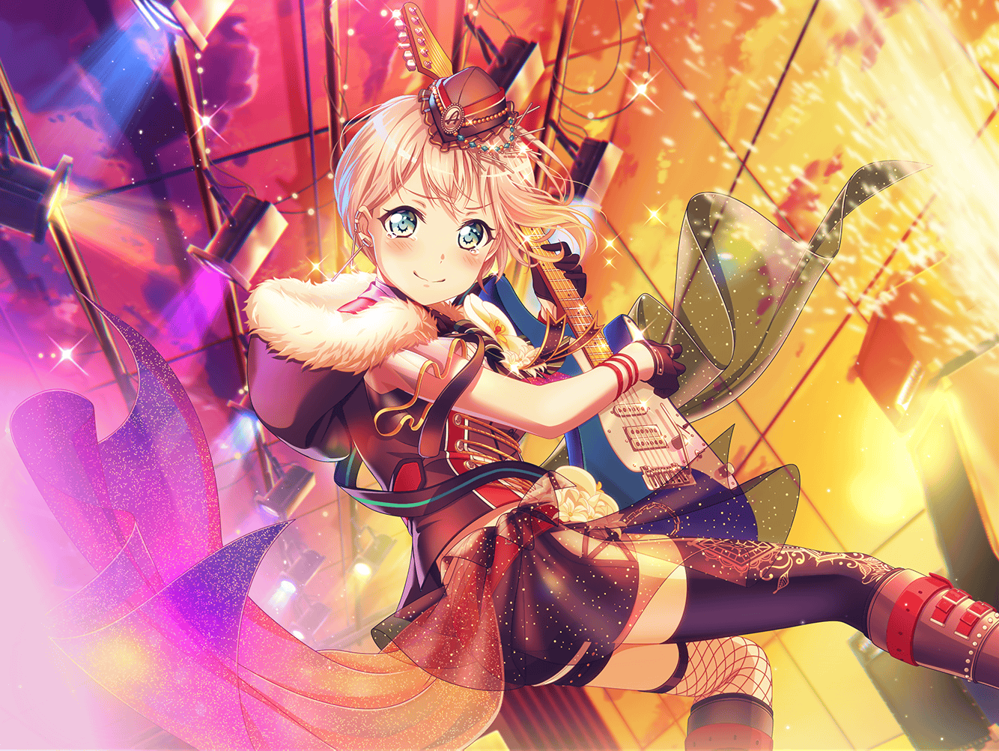

公園
モカ
おお、こんにちはー。
{{userName}}さん、お散歩ですか～？
モカ
なるほどなるほど。
やっぱりお散歩は夕方に限りますよね～
モカ
いやいや、モカちゃんはお散歩というよりもー、
この暮れなずむ街を眺めてたんですよ
モカ
夕方の街並みって、何度見てもエモいんで～
モカ
……え？ さみしそう？
いやいや、そんなことないです
モカ
別に黄昏れてたわけじゃないですし
モカ
あ、そういえば、
夕方のことを黄昏時って言うんですよね
モカ
あの『黄昏』て、もともとは『誰（た）そ彼（かれ）』って
意味だったらしいんですけど、知ってました～？
モカ
だんだん暗くなってきて、そこにいる人の顔が
見えなくなって、誰だかわからなくなる時間だから
『たそかれどき』って言うらしいですね～
モカ
そう考えてみると、
今回のことも『誰そ彼』だったのかもしれないですなあ
モカ
ふむふむ。モカちゃん、納得～
モカ
……あ、そっか。
{{userName}}さんには、確か言ってませんでしたね
モカ
今回のことっていうのは、
蘭が作ってきてくれた新曲の歌詞がみんなに伝わらない、
……っていうちょっとした事変があったんですよね
モカ
あ、それはもう解決してますんで、ご安心を～
モカ
ただあの時は、かなりみんな焦りましたね。
蘭自身もけっこー焦っちゃってたし
モカ
今までそんなこと、一度もなかったですからね～
モカ
あたしも、なんとなく蘭が今どんな顔をしてるのか
わからなくなっちゃった、というか？
モカ
まさに『誰そ彼』だったわけです
モカ
いえいえ、歌詞の意味はなんとなくはわかりましたよ～。
こう見えてモカちゃんは国語のできる子なんで
モカ
ただ、その歌詞を書いている蘭の顔が……
浮かばなかった、って感じですかね～
モカ
え～？ よくわからない～？
モカ
ひどいなー、あたしがこんなに一生懸命語っているのに～
モカ
まー、けどそれは仕方ないか。
この国語がよくできるモカちゃんでさえ、
自分の気持ちがわかるまで時間がかかりましたからね～
モカ
けど、自分の気持ちさえわかっちゃえば、
あとはやるべきことをやればいいだけなんで
モカ
これからはAfterglowのみんなと一緒に、
前を進んでいく蘭の背中を追いかけますよー
モカ
まー、蘭はあー見えてさみしがり屋なんでー、
たまに振り返ってみんなが付いてきてるか
確認してくれますしね～
モカ
あはは～。
だからちゃんと顔は見えますよー
モカ
おぉ～、なんかそう考えると、
この関係性もかなりエモくないですか～？
モカ
あはは～、ですよね～。
いやあ、エモエモのエモですな～